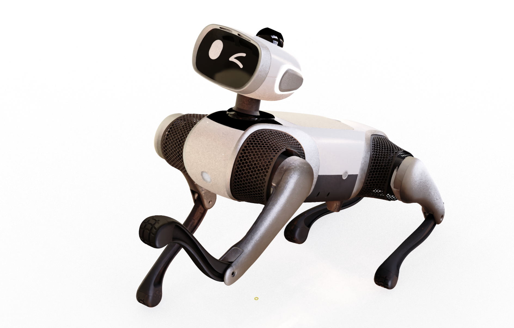
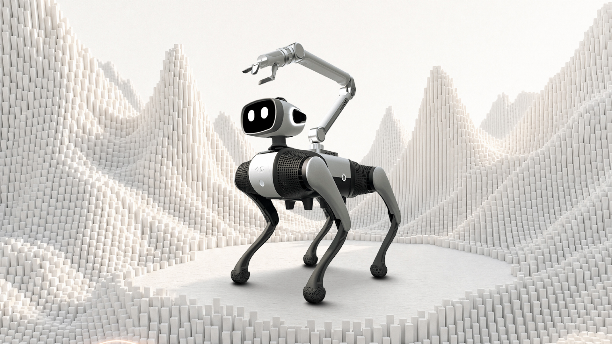

走进 VBOT 大头 EDU：产品全景、硬件规格与具身智能新物种

🎙️ 展开直播口播导语（讲师版全文）
“各位极客开发者、老师、同学们，以及守在直播间前对具身智能充满好奇的小伙伴们，大家晚上好！欢迎来到 VBOT EDU 具身智能大师课的第 0 讲！提到四足机器狗，大家脑海里跳出来的形象往往是冰冷、硬核、甚至有点距离感的工业机器——没有表情，没有五官，只有一个冷冰冰的黑色机身在地上机械地踱步。但今天站在大家面前的这一只，完全颠覆了传统四足机器人的想象！”
“请看它——这就是维他动力（VitaDynamics）专为具身智能开发者打造的旗舰伙伴：VBOT 大头 EDU 版！它最醒目的标志，就是机头上方那颗拥有双自由度动态俯仰、搭载高清互动表情屏的‘大脑袋’！它不仅能摇头、眨眼、向你做鬼脸、转头注视你的目光，更重要的是，它是一台拥有 128 TOPS 超强板载算力、14 个高扭矩关节电机、全栈开放 Ubuntu 22.04 LTS 与 ROS 2 / Aorta 通信架构的‘移动具身智能实验台’！无论你是刚入门具身智能的在校大学生、创客极客，还是正在用 Cursor / Claude Code 探索 Agent 控制的大模型开发者，这台机器狗都将是你从‘纯软件虚拟世界’踏入‘物理现实世界’的第一台终极伙伴。今天，我们就用 15 分钟，带你彻底揭开它的神秘面纱！”
本课学习目标
- 说清“大头”的价值：双自由度头部 + LCD 表情屏如何带来视线对齐（Eye-contact）
- 记住六个关键数字：128 TOPS / 14 关节 / 24.5 N·m / 16 kg / 5 kg / 594 Wh
- 复述 37 秒官方发布视频四幕的技术亮点
- 按六大系统查阅核心规格，不被参数表淹没
- 用六维对比讲清“为什么研发必须选 EDU 版”
一、产品全景：一只会“看人”的四足机器人
传统四足机器人常常“有身无首”：没有五官、没有朝向感，只能按预设轨迹机械踱步。VBOT 大头 EDU 的分水岭，就在机头上方那颗双自由度动态头部——Pitch（俯仰）与 Yaw（偏航）两个轴让它能抬头、低头、左右转头，正面嵌着的高清互动液晶屏则负责眨眼、微笑、做鬼脸。它不是卖萌的装饰件，而是给具身交互补上了最关键的视线对齐（Eye-contact）接口。
在这颗“大头”之下，是一台按开发者需求堆料到底的移动实验台：128 TOPS 板载 NPU 算力、14 个高扭矩关节，以及从底层就完全开放的 Ubuntu 22.04 LTS + ROS 2 Humble + Aorta (Zenoh) 软件栈。它把“实验室里的算法”和“物理世界里的运动”接到了同一条总线上。
为什么“大头”不是装饰
没有头的四足机器人，只能靠声音或机身朝向让人“猜”它在关注什么。而有了 Pitch / Yaw 双轴与表情屏之后，开发者可以把声源方向（DOA）或人脸坐标映射成头部角度，让机器狗真的看向目标；配合屏幕上眼神、眨眼、微笑的切换，交互从“它听见了”升级为“它注意到你了”。
全栈开放：三个名字要记住
- Ubuntu 22.04 LTS (Jammy)：完整 Linux 控制台与 root / sudo 权限，想装什么库由你决定
- ROS 2 Humble：与学术界、产业界主流开源生态无缝对接的机器人中间件
- Aorta (Zenoh)：机载高吞吐主干总线，开放 46 个核心话题，负责把传感器与运控数据低延迟地送到你手里
二、官方发布视频四幕拆解（37 秒）
官方发布的《维他动力大头 EDU 发布视频》是一支 37 秒、1080 × 1920 的竖屏高动态演示。短短半分钟里，它把“能跑、能看、能听、能扩展”四件事各用一幕讲完。下面按时间轴逐幕拆解，方便你在直播讲解或团队内部分享时直接引用。
–00:08
机器狗在平地与阶梯地形中极速起步，以高频 Trot（小跑）步态平稳穿行；遭遇外力踢击或台阶颠簸时，四足瞬间完成微秒级逆动力学重规划，毫无滞涩地恢复重心。
底层底气来自 14 颗 VGeer 高集成度一体化关节电机（峰值扭矩 24.5 N·m），以及 RTOS 网关板的毫秒级力矩控制闭环。
–00:18
镜头聚焦标志性的头部机构：Pitch（俯仰）与 Yaw（偏航）双轴动态转动，正面高清液晶屏随人声指令切换眼神、眨眼、微笑，机器狗还自然抬起右前足向观众挥爪问好。
它打破了传统四足“有身无首、缺乏朝向感知”的交互盲区，为医院导医、商圈导购、陪伴看护提供了天然的视线对齐（Eye-contact）接口。
–00:28
用户在侧方发出语音呼唤，头部 4 麦克风阵列精准捕捉声源到达角（DOA），整机在 0.3 秒内同步转头并调整步速，与用户保持并排行走。
结合 360° 16 线激光雷达的局部避障与 SC230AI 双目深度视觉，它不只是“看得见”，还能“听声辨位”。
–00:37
机身背部的模块化快拆结构亮相：开发者可快速加装高负荷背筐、外置雷达支架，甚至直接在背板接入 PiPER 六轴机械臂做移动抓取作业。
EDU 的承诺是向所有开发者完全开放底层通信总线、提供完整 root 权限与丰富 ROS 2 驱动，绝不设人为技术壁垒。
三、核心规格总览：六组参数看完整机
下面这张表整理自维他动力官方产品规格库（vbot.cn/Detail），按六大系统分组。读表时别只盯数字，重点看第二列后半句——它说明这项指标对开发者意味着什么。

| 规格项 | 官方工程指标与开发者意义 |
|---|---|
| 计算大脑 | |
| 主控处理器（SoC） | 地瓜（DiGua）S100P 异构高算力平台 |
| CPU 核心架构 | 8 核心 ARM Cortex-A78AE 高性能低功耗车规级处理器 |
| NPU 边缘 AI 算力 | 128 TOPS @ INT8，支持机载运行 YOLOv11、MediaPipe、Whisper 及端侧 VLM 视觉大模型 |
| 操作系统与中间件 | Ubuntu 22.04 LTS (Jammy) + ROS 2 Humble + Aorta (Zenoh) 原生总线 |
| 动力与关节 | |
| 关节电机总数 | 14 个：四足 12 关节（3 自由度/腿 × 4）+ 头部 2 自由度（Pitch 俯仰 + Yaw 偏航） |
| 电机型号与性能 | 自研 VGeer 高速力矩电机，峰值力矩 24.5 N·m，集成双绝对值磁编码器 |
| 运动性能与步态 | 支持 Trot（小跑）、Walk（慢走）、Crawl（爬行）、Stair（楼梯步态）、自立站起、跳跃自恢复 |
| 全景感知 | |
| 激光测距系统 | 顶部集成 360° 16 线半固态激光雷达，有效测距 0.1 m ~ 30 m，建图精度达厘米级 |
| 视觉系统 | 前向集成 SC230AI 双目立体视觉相机，支持 H.264/H.265 硬件实时编解码 |
| 听觉交互系统 | 头部集成 4 麦克风环形空间阵列，支持声源定位（DOA）、波束成形降噪与 AEC 回声消除 |
| 惯性导航与定位 | 内置工业级 6 轴 IMU（高精加速度计 + 陀螺仪）与 GNSS 定位模块 |
| 机身与负载 | |
| 整机自重（含电池） | 约 16.0 kg，高刚性轻量化铝合金机身骨架 + 模块化 ABS 护壳 |
| 物理外形尺寸 | 站立态约 650 mm（长）× 380 mm（宽）× 450 mm（高） |
| 额定负载能力 | 5.0 kg，可在额定负重下保持 1.5 m/s 连续动态巡航与运动编排 |
| 结构极限负重 | 12.0 kg，可承受机械臂瞬时冲击或大重量外挂设备 |
| 电池与续航 | |
| 动力电池规格 | 594 Wh 超大容量智能动力锂电池组，支持快速拔插锁紧机构 |
| 持续作业续航 | 综合工况 2.0 ~ 4.0 小时；空载平稳站立待机可达 6 小时以上 |
| 外设动力取电口 | 机身预留独立 24V DC / 10A（峰值 15A）稳压电源输出接口，专供机械臂与高功耗外设 |
| 外设与通信 | |
| 有线通信网口 | 机身侧方集成 Type-C 多功能扩展口（模拟千兆以太网 eth2，免驱免外接扩展坞） |
| 工业级总线 | 双路隔离 CAN-FD 接口，最高支持 1 Mbps / 5 Mbps，完美匹配 PiPER 六轴机械臂 |
| 无线网络传输 | Wi-Fi 6 (802.11ax) + 蓝牙 5.2 + UWB 超宽带空间定位（由网关板 RTOS 托管） |
四、消费版 vs EDU：六维开发者权限对比
“市面上便宜的消费级机器狗也能跑能跳，为什么做研发必须选 EDU？”答案不在硬件参数，而在你能碰到多深。下面六个维度，基本覆盖了从“玩”到“做研究”的全部差距。
| 对比维度 | 普通消费级 / 基础演示版 | VBOT 大头 EDU 开发者版 | 开发者影响与价值 |
|---|---|---|---|
| 1. 系统权限与终端 | 闭源沙盒固件；仅开放手机 App 遥控（Level 0）；无系统终端登录通道，无 root / sudo 权限 | 完全开放 Linux 控制台；开放 ssh vbot@192.168.126.2；拥有全功能 root / sudo 权限 |
可自主安装任意 Python 库、C++ 依赖、编译定制 ROS 2 包，打造属于你的系统环境 |
| 2. 通信中间件底座 | 厂商私有二进制加密协议；外接上位机需逆向破解；延迟高、丢包严重 | 原生搭载 Aorta (Zenoh) 边缘高吞吐主干总线（46 核心开放话题）+ ROS 2 Humble 桥接子集 | 工业级、零拷贝、极低延迟通信，与学术界和产业界顶尖开源生态无缝对接 |
| 3. 原始传感器数据流 | 仅能在手机 App 里看压缩后的标清图传；无法获取激光雷达点云与音频 PCM 原始流 | 全传感器裸数据高频广播：激光雷达点云切片、双目 H.265/RGB 解畸变帧、IMU 100Hz 原始加速度、14 关节编码器数据 | 满足 SLAM 建图、Nav2 自主导航、目标识别检测、3D 点云避障等科研与商用落地需求 |
| 4. 头部交互系统 | 无独立头部，或仅固定俯仰角度的塑料装饰壳；无互动屏幕；表情完全固定 | 2 自由度动态头部（Pitch / Yaw） + 正面高清互动液晶屏 + 4 麦克风阵列 | 支持动态眼神凝视、表情帧缓冲直接写入（Framebuffer/UI）、多模态情感计算与交互 |
| 5. 硬件电气扩展 | 无外部电源引出，无标准工业总线；外挂传感器极易烧毁电池主板 | 专用 Type-C 千兆免驱网口、双路隔离 CAN-FD、独立 24V/10A 大功率供电口 | 即插即用加装 PiPER 六轴机械臂、双目工业全景相机、Orin / RDK 外部算力板等复杂外设 |
| 6. AI 与开发范式 | 依赖按键映射与离线固定宏动作；无法接入大语言模型（LLM / VLM） | 原生 Agent-Native 架构：内置 RCP 任务编排系统、MCP（Model Context Protocol）18080 服务 | 开发者可直接通过自然语言提示词，让大模型（GPT-4o / Qwen）驱动具身动作闭环 |
架构分流：两条完全不同的技术路径
把六个维度压缩成一张链路图，就是下面这样：左边只能“用”，右边可以“改”。
eth2五、🧪 交互小实验：给 128 TOPS 做一次预算
128 TOPS 听起来很多，但它是整机共享的：视觉、语音、建图、策略网络都在同一块 NPU 上排队。下面把几种常见负载折算成粗略的算力占用，勾选你打算“同时常驻”的任务，看看预算还剩下多少。
算力预算器：勾选要同时常驻的负载
勾选即刻累加，读数与进度条实时反馈：占用超过 80% 转黄，超过 100% 转红。默认按 1 路计算；把并发路数调到 6 路以上，就能看到黄色甚至红色预警。
以上为工程估算，非官方跑分；实际占用随模型精度、输入分辨率、帧率与算子实现而波动，仅用于建立“预算感”。
taskset -c 2-7 把推理进程限定在 2~7 号核心，为运控与通信留出 0~1 号核心。# 只让推理进程跑在 CPU 2~7，把 0~1 留给运控与通信
taskset -c 2-7 python3 your_infer.py六、萌新第一问：我需要提前准备什么？
如果你刚踏入机器人领域，请先放轻松：你不需要精通逆运动学矩阵推导，也不需要几百小时的嵌入式焊接经验。把下面两份清单准备好，就足够开始第一课了。
硬件准备
- 开发主机：一台安装了 Ubuntu 20.04 / 22.04、macOS，或 Windows（推荐启用 WSL2）的笔记本电脑
- 连接线缆：一根质量合格的双头 Type-C 数据线，或 Type-C 转 RJ45 千兆网线，用于接入机身侧方的
eth2维护口 - 安全场地：一块至少 2m × 2m 的平整开阔空地；前几次测试建议铺防滑地毯或选干净地面，并清除脚边杂物
软件与思维准备
- 基础终端技能：会打开终端敲
ssh、ping，能运行基本的 Python 脚本 - 拥抱 AI Coding Agent：文档库已针对 Cursor、Claude Code、Windsurf 等助手深度优化，遇到不懂的概念，随时把文档喂给 AI
- 心法准则：牢记具身开发的金科玉律，时刻怀揣对物理硬件的敬畏之心
七、本课小结与下一课
这一课没有一行代码，但你应该已经能回答三个问题：它和普通机器狗差在哪、它的硬指标是什么、以及为什么开发者必须选 EDU。把答案压缩成三句话：
| 记住这件事 | 一句话答案 |
|---|---|
| 交互形态 | 双自由度头部（Pitch / Yaw）+ LCD 表情屏，“看向你”是可编程能力，不是装饰 |
| 硬件底座 | 128 TOPS + 14 关节 + 594 Wh，既能跑端侧大模型，也能背负 5 kg 额定负载 |
| 开放程度 | Ubuntu 22.04 root + ROS 2 Humble + Aorta (Zenoh) 46 话题全开放，这才是 EDU 的本质 |
ssh vbot 免密登录：1.1 极速开箱与网络接入。